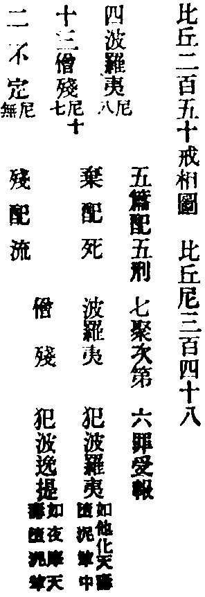
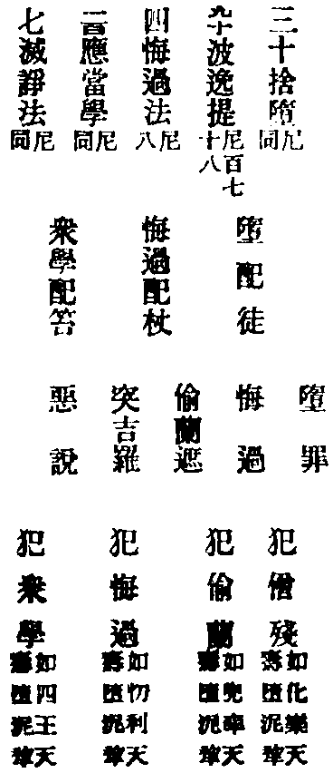

唄
音敗。或云唄匿。或云梵唄。此翻讚歎。
重治毗尼事義集要卷第十五
○阿蘭若法
第三分云。清旦洗手。取衣抖擻著大衣著頭上。或肩上。洗鉢。放絡囊中。取革屣。行露杖。持鑰出房。閉戶。推看牢不。若不牢。應更安扂。若牢。應推繩著內。四顧看。若無人見。應藏戶鉤。若有人見。應更著隱處。或持去。在道行。應常思惟善法。若見人應先問訊言善來。若欲入村。安鉢置地。著大衣。以革屣打露杖寄村邊。入村時。應看巷相。若空處相。市相。門相。糞聚相。入白衣家。應看第一門相。乃至第七門相。若欲正衣。應向壁。右手捉杖。左手捉鉢。不應當道住。不應屏處住。不應迎取食。若喚。應往。若得飯。乾飯等。不應并著一處。若是一鉢。應以物隔。若樹葉皮。若鍵[金*咨]。若次鉢。若小鉢。麨應手巾裹。不應選大家乞。不應強乞要得。若知當得。應待。乞已。出村。下道。安鉢置地。褋大衣著頭上肩上。行時常思惟善法。見人應先問訊善來。至常所食處。掃灑。具水器。殘食器。牀座。洗脚石。水器。拭脚巾。若有餘阿蘭若比丘來。應起遠迎。為取鉢。與座。與水器等。乃至澡豆洗手已。淨潔別留殘食。若有賊來。應與。次授水與彼。阿蘭若比丘。次授食與彼。食時應看。供給所須。鹽醋菜水扇等。若日時欲過。應俱食。食已。應為取鉢。與洗手。若有餘食。應與人非人等。洗盛殘食器。牀座等物復本處。掃灑食處。若有賊來。應語。此是水。此是洗足物。此是食。為汝等故別留。淨潔。欲食便食。阿蘭若比丘。應善知夜時節。善知方相。善知星。不應敷好臥具安眠。應初夜後夜警心思惟。
根本律云。釋子出家。耽著財利資生雜物。不能見諦。佛告苾芻。我欲於此夏安居三月內。宴默而住。勿令苾芻見我。除一為我請食者。除長淨日。時諸苾芻。謹受佛教。眾共立制。不得輒見世尊。若違制者。令作墮罪說悔。時有苾芻名小軍。於王舍城作前安居。世尊是後安居。是小軍三月滿已。隨意事了。并作衣竟。執持衣鉢。順杜多行。與諸門徒。端嚴整肅。往詣佛所。徐扣門扇。佛與開門。小軍入。禮佛而坐。佛慰問曰。小軍。何意汝自端嚴。端嚴圍遶。小軍言。大德。若有人來。欲求出家。我便報言。汝善男子。當住阿蘭若。當乞食。但三衣。糞掃衣。樹下坐。我為讚歎如是等事。若言能者。我度出家。若言不能。令隨意去。若有欲受具圓。或求依止。或求讀誦。或學如理作意寂念思惟。來求我者。皆如前報。由此緣故。我身端嚴。門徒亦爾。佛言。善哉小軍。汝能誓度無量人天。利益無邊諸有情類。來求法者。令求安樂。小軍當知。若能讚歎杜多功德。則為讚歎我身。若有毀呰杜多功德。即是毀呰我身。何以故。我於長夜。稱揚如斯出要。然汝不應違僧制令。小軍白佛。我實不知此處僧伽。作何制令。佛告之故。且曰。無問客主。僧制須遵。然阿蘭若苾芻。與其饒益。免依僧制。若欲見我。無問時節。隨意來見。小軍聞已。歡喜奉行。禮佛而退。六眾苾芻。即詣小軍。詰其所犯。小軍具以佛語告之。時彼釋種諸出家者。各生是念。小軍來見。即得承事。親共言談。我等在此。而不能得。由我多貪。佛擯黜我。我等宜於長衣鉢等。觀之如病。如癰。如箭。當持棄之。即將所有諸物。至阿難所。阿難白佛。佛令阿難受取。置一大房。語諸苾芻。若有缺乏。隨意取用。釋種苾芻棄衣物已。即詣佛所。佛為說法。令五百釋種。即於座上。自證圓滿。破無明殻。斷三界惑。成阿羅漢。三明六通。八解成就。得如實知我生已盡。梵行已立。所作已辦。不受後有。心無障礙。如手撝空。刀割香塗。愛憎不起。觀金與土。等無有異。於諸名利。無不棄捨。釋梵諸天。悉皆恭敬。
律攝云。非愚癡人。堪住阿蘭若處。設非多聞。但明戒相。亦得住於阿蘭若處。
十誦律云。阿練若比丘。有人來。先應共語。好正憶念。和顏悅色。不應垂頭。應言善來。應畜火。及火鑽。食。食器。水。水器。洗脚水。水器。淨水瓶。常用水瓶。盛滿水。應知道。知日。知時分。知星宿。應誦修多羅。毗尼。阿毗曇應解。應知四禪四果。若未得者。應知誦讀。不應畜日珠月珠無人深山可畏處。不應住。
毗尼序云。若比丘。獨處一身。聽心念說戒。自恣受衣。受七日法。受七日藥。與一請。及淨施衣物。
僧祇律。世尊捨眾獨行偈曰。若審得善伴。共行住勇健。遊處在諸眾。其心常歡喜。若不得善伴。獨行住勇健。捨於郡國邑。無事如野象根本律。大迦葉尊者偈曰。所食無過一升飯。眠臥惟須一小牀。兩張氍布足遮身。自外並是愚癡物四分律。跋闍子比丘警阿難偈曰。靜住空樹下。心思涅槃法。坐禪莫放逸。多說何所作。
○大眾會法
第三分云。眾僧破。非法和合。應在身口不生惡處坐。如法和合。事已滅。應間闕一人坐處坐。
第四分云。論法律時。相降三歲。聽共坐木牀。相降二歲。聽共坐小繩牀。
比丘至僧中。有五法。應以慈心(一)。應自卑下如拭塵巾(二)。應善知坐起。見上座。不應安坐。見下座不應起立(三)。不雜論世俗事。若自說法。若請人說法(四)。若見僧中有不可事。心不安忍。應默然。何以故。恐僧別異故(五)。
五分律云。入僧中。應以五法。一下意。二慈心。三恭敬。四知次第坐處。五不論說餘事根本雜事云。年少苾芻。應喚老者為大德。老者喚少年為具壽。
○分物法
一比丘住。得可分衣物。或有客比丘來四人以上。應持衣與一比丘。令白二羯磨分。若二人三人。應彼此共三語分。若一人。心念口言。此是我分有住處。有比丘。有比丘想。欲別部分。不成分。突吉羅。有比丘疑。不成分。突吉羅。無比丘想。不成分。不犯無比丘。有比丘想。及疑。皆成分。突吉羅。無比丘想。成分。無犯。
受衣成不成。犯不犯。亦爾。
有多知識比丘死。有多僧伽藍。園。田。果樹。別房。及物。銅瓶。銅盆。斧。鑿。燈臺。重物。牀褥枕等。多有守僧伽藍人。車轝。澡罐。錫杖。扇。作器。衣。鉢。坐具。鍼筒。不知云何。佛言。多知識。無知識。一切屬僧。若衣鉢坐具鍼筒。現前僧應分。餘皆屬四方僧。不應分。
二部僧多得可分衣物。乃至唯有沙彌尼。亦應分作二分。唯有沙彌。亦應分作二分。若無沙彌尼。比丘僧應分。若無沙彌。比丘尼僧應分。
若比丘。在無比丘處命終。彼處優婆塞。或守園人。應掌錄。俟五眾出家人來。與之。若無來者。送與近處僧伽藍。
行波利婆沙摩那埵比丘。亦應與分。若被訶責等羯磨者。可置地與。或使人與。
病比丘死。以衣鉢坐具鍼筒。白二羯磨。與瞻病者。復有多三衣者。以亡人常所持者與之。應看此瞻病人。若能極上瞻病。與上三衣。若中。與中三衣。若下。與下三衣。
負債比丘命過。聽持長衣償。或無長衣。賣三衣償之。有餘者。與瞻病人。瞻病人。應問病比丘。何者是三衣。何者是長衣。汝負誰。誰負汝。汝應與誰。若不問。如法治有比丘。在異處結夏安居已。復於餘處住。住日多處。取安居物(此謂有因緣。受過七日法而往住也)。若二處俱等。聽各取半(此謂有因緣故。四十日猶不能還本安居處。不名破夏也)。
夏安居未分衣。便去。應囑一人取分。僧應與之。若不囑。若漫囑。若受囑者忘。皆非僧過。
檀越為欲施塔。乃至作會等。現前僧大得可分衣物。不應留。此是非時衣。應分。
一比丘住處。大得夏安居衣物。彼比丘應作心念。此是我物。若受若不受。餘比丘來。不應得分。
若大得衣物。後僧破。應分為二分。若未得時。僧破。應問檀越。隨彼所語與之。若檀越言不知。或言俱與。應作二分。
問。僧祇治罪法中。被舉人無常。衣鉢不應分。應棄之。今云。被舉比丘命過。衣鉢與同羯磨舉僧。此復何從。答。僧祇意指不捨惡見。此中通指一切舉罪。兩不相背。俱可從也。
有僧得安居衣。破為二部。應數人多少分。若未得安居衣。僧破。亦應數人多少分。若得夏衣。未得夏衣。往餘部。皆應與分。
凡有八種施衣。若與比丘僧。若與尼僧。若與二部僧。若與四方僧。若與界內僧。若與同羯磨僧。若稱名字與。若與一人。皆應隨所施分屬。
第四分云。四方僧物。不應分。不應自入。不應賣買。亦非僧所賣。非多人乃至一人所賣。若彼自入。若分。若賣買者。不成自入。不成分。不成賣買。犯偷蘭遮。何等四方僧物。若僧伽藍。僧伽藍物。房舍。房舍物。盆。瓨。釜鑊。斧。鑿。燈臺。諸雜重物。繩牀。木牀。臥具。木。竹。皆不聽分。聽分果華。若華。上佛。
僧地作私房。有上座客比丘來。應起避。更無有理以僧地入己有五法為僧分粥。入地獄如射箭。有愛。有恚。有怖。有癡。不知分未分。有五法分粥。生天如射箭。不愛恚怖癡。知分未分。乃至差沙彌。使。亦如是。
僧祇律云。餘處安居。不應此處得衣分。要是中安居。是中得衣分。除命難。梵行難。
有五事。不應與安居衣。一被舉。三見中若一一見不捨。作舉羯磨(但除此不捨惡見舉。則餘不見罪舉不懺悔舉及訶責羯磨等。並可置地與。或使人與也)。二罷道。若彼依王力。大臣力。賊黨力。來索。能作不饒益者。應與。三無常。若安居衣已集雖未分。命垂終時。囑與某甲。死已。應與。四破安居。不前安居。不後安居。五去時不囑取衣分。若比丘。雖不在此安居。檀越為彼故設供。應與分。若施家欲通與餘比丘。隨檀越意。應與。
有四種物。隨語應屬現前僧。何等四。我施衣。衣直。物。物直。又有十種得。應屬現前僧。何等十。時藥。夜分藥(即非時漿)。七日藥。盡壽藥。死比丘物。施住處。大會。非時衣。雜物。請食。
五分律云。沙彌命過。其物現前僧分。
問。亡沙彌物。僧祇。五分。二說相違。此應安從。答。若亡沙彌。本是和尚撫育。則應從僧祇。若亡沙彌。久已同僧利養。則應從五分。葢各舉一隅耳。
十誦律云。與學沙彌。當與大比丘等分分。
毗尼序云。比丘貸塔物四方僧物用。死後。以衣鉢物。計直輸還。餘殘。僧應分。比丘衣鉢物。貸塔用。四方僧用。死後以塔僧物計直還。現前僧應分。
根本雜事云。僧若得餅。乃至極小。猶如樹葉。眾共分張。若得衣。乃至極少。堪作燈炷。眾亦共分。若得上價[疊*毛]。賣取錢貝。然後共分。
尼陀那云。苾芻於尼寺死。衣鉢應還苾芻。苾芻尼死僧寺。衣鉢還尼。若處無苾芻者。尼即應受。若處無尼眾者。苾芻應取。
有四種物。皆不應分。一四方僧物。二窣堵波物。三眾家病藥。四寺資產物。
設大會時。多獲珍財。據合得者。隨次準法平分。眾若多者。應可千人與其一分。各自分之。或復百人。或三十人。乃至十人而為一分。令自分取。十人分中。若一身死。已分衣竟。亡人之分。應入僧伽。如其未分。九人合得。多亦準斯。
目得迦云。不應持此處物與餘住處。應隨定處而受用之。若私與者。應全償直。若不還者。得重越法罪。
二眾利物。應共平分。求寂男女。三分與一。學戒女。及欲受戒人。二分與一。
若施主本意。惟供此處住寺之人。不通餘人者。若有來食。並須計物酬價。
律攝云。若安居人。有緣出行。囑授而去。應取其分。若不囑授。則不應取。若受囑人不為取者。應以己物準數酬還。苾芻命過。若苾芻來。及五時者。應與分。一打犍椎時。二誦三啟無常經時。三禮制底時。四行籌時。五作白時。若眾不和集。或無秉法人。應為初後法。謂取亡人少財許物。或兩錢等。於眾首上座。及最下座。各行與之。用為定記。然後現前僧如常共分。更不須作法。若作初後法竟。有人來者。不應與分。若前四時有。後二時無。亦應與分。若作自己。現於界內應合得者。皆應受利。若不作白不作初後法者。但是世尊聲聞弟子。所有現在瞻部洲中。或住餘處。悉皆有分。所有經論。並不應分。當貯經藏。四方僧共讀。其外書賣之。現前應分。所有券契之物若能早索得者。即可分之。如未得者。卷貯僧庫。後時得充四方僧用。若苾芻病。作如是語。我死之後。可持此物與彼人者。是俗人法。不成囑授。此物應分。對面授者。便為善與。其死屍。應焚燒供養。誦經事了。然後分物。若亡人寄物。即於物所在處。眾共分之毗尼母經云。比丘存時所有經律。應處分與能讀誦者。若不及處分。現前僧應與能讀誦者。不應分賣。
問。亡比丘經律論。律攝。母論。二說不同。此應安從。答。經論貴在流通讀誦。但除分賣。餘可隨時斟酌。
○說法法
第二分云。聽說義。不具說文句。不應二比丘共一高座說法。不應相近敷高座說義互求長短。不應共相逼切。不應同聲合唄。不應過差歌詠聲說法。歌詠聲說法。有五過失。一自生貪著。愛樂音聲。二聞者生貪。三聞者習學。四長者譏嫌生慢。五靜寂之處。緣憶音聲以亂禪定。
第四分云。若比丘。說相似文句。違法毗尼。此比丘令多人不得利益。作諸苦業。以滅正法。若隨順文句。不違法毗尼。此比丘。利益多人。不令作眾苦業。正法久住。乃至若比丘。非制而制。是制便斷。如是漸漸令戒毀壞。令多人不得利益。作眾苦業。以滅正法。若比丘。非制不制。是制不斷。如是漸漸令戒成就。利益多人。不作苦業。令正法久住。是故汝等。非制不應制。是制不應斷。當隨佛所制戒而學。
問。今觀五百問經。典眾部律。多有相違。又觀百丈清規。亦甚與律不同。後人遵行。得無壞正法不。答正法滅壞。全由律學不明。五百問經。的約後人附會增添。昭彰可識。即百丈清規。久失懷悔禪師本意。並是元朝流俗僧官住持杜撰增飾。文理不通。今人有奉行者。皆因未諳律學故也。
佛告比丘。有四種廣說。何等四。若比丘。如是語。諸長老。我於某甲某城。從佛聞受持。此是法。是毗尼。是佛教。若聞彼說。不應便生嫌疑。亦不應訶。應審定文句已。尋究修多羅毗尼。檢校法律。若不相應。違背於法。應語彼比丘。汝所說者。非佛所說。或是長老不審得佛說。何以故。我尋究法律。不與相應。長老不須誦習。亦莫教餘比丘。今應棄捨。若尋究法律相應。應語言。長老所說。是佛所說。審得佛語。何以故。我尋究法律相應不違背。長老應善持誦習。教餘比丘。勿令忘失。此是初廣說。復次若言。我於某村城和合僧中上座聞。此是法等。亦復尋究檢校。若不相應。應語言。此非佛所說。是彼僧及上座不審得佛語。長老亦爾。乃至今當棄之。若相應。應語言。是佛所說。彼僧上座及長老亦審得佛語。乃至勿令忘失。此是第二廣說。三者若言從知法毗尼摩夷多比丘所聞。亦應如是。四者若言從知法毗尼摩夷一比丘所聞。亦應如是。
根本律云。於上座處。置師子座。若是定處。甎為蹋道。若處不定。應為木梯。法師棄唾。應安唾器。
慳法。招五過失。一得生盲。二無智慧。三遠離佛法。四室有怨家。五不入聖位。命終墮地獄。
律攝云。有五種人。不應為說毗柰耶藏。謂性無所知。強生異問。或不為除疑而問。或試弄故問。或惱他故問。或求過失故問。
宣說聖言。不應求利以為活命。若說非法。上座應遮。又說法人。不應多領門徒以為侍從。彼自隨行者無犯。說法之師。若他不請。輒為人說。得越法罪。
十誦律云。聽法時。上座來。不應遣下座起。若二師來。恭敬故自起。不得起他。
有五種人。不應為說毗尼。試問。無疑問。不為悔所犯問。詰問。不受語問。
月六齋日。無病比丘。應和合集一處說法。若外道論議師。懷嫉妒心來。欲破說法。當如法難詰降伏。莫瞋惡口。
說法人。應一心說法。生慈悲利益心。當淨潔明了。莊嚴語言。次第相續。辯才無盡。隨順諸法實相。為法故說。不為利養。
毗尼序云。說法時。聽法時。上座來。不應起。上座亦不應驅下座起。
不應作歌詠聲說法。
毗尼母經云。說法比丘。當籌量大眾。應說何法而得受解。若應聞深法。當為說深。應聞淺法。為說淺法。不益前人。名為惡說。復次應除貪心。不染心。不惡心。不愚癡心。不自輕心。不輕大眾心。應慈心。喜心。利益心。堪忍心。不動心。無惑心。立此等心。應當說法。復次不應因餘緣說法。應故說法。以法重難聞。此法是寶。是藥。能利益人。是以故說。乃至一四句。能使前人如實解者。於長夜中利益安樂。
聽引經中要言妙辭直顯其義。
○讀誦法
根本律云。多聞有五種利益。一者蘊善巧。二者處善巧。三者界善巧。四者緣起善巧。五者於其所須教誡教授。不求於他。
雜事云。許二事作吟詠聲。一謂讚大師德。二謂誦三啟經。不解吟詠者。應在屏處學不應歌詠引聲而誦經法。
明慧多聞強記。能摧外道者。方可學習外書。於日初分及以中後。可讀佛經。待至晚時。應披外典。夜三亦爾。
四分律云。不應以外道言語雜糅佛經。聽隨國俗言音所解。誦習佛經。
問。且如此土老莊及宣尼典籍。引入經論以釋義旨。為有罪不。答。教眼未開。徒欲莊嚴章句。廣引文辭。是名雜糅。若達實相法印。能簡能收。簡別分劑分明。不屈不濫。收則麤言細語。皆第一義。或復旁引曲譬。令人開解。皆順四悉。無違妨也。
十誦律云。下座欲教上座法者。應在高處坐。為尊法故。上座欲從下座受法。應在下處坐。為尊法故。亦聽下座教上座法者。共等牀坐。為上座故。
唄有五利。身體不疲。不忘所憶。心不懈倦。聲音不壞。語言易解。又諸天聞唄。心則歡喜。
薩婆多論云。若比丘。無處受誦。乃至得從沙彌尼受法。但求好時戒重德人作伴證明耳。亦得從白衣受法。但不得稱阿闍棃。如是展轉皆得受法。但消息令不失威儀。
問。相傳云白衣說法比丘聽。是佛法衰兆。何得許從白衣受法耶。答。給孤長者。每向祇園授新比丘經。但必先禮足而後說法。維摩居士。時復彈偏斥小。令諸聲聞菩薩皆悉喪辭。但未嘗敢以師禮自居。此皆佛世芳規。豈名衰兆。若稱白衣為師。比丘反行禮敬。又或從受外學。則皆為非法矣。
五分律云。聽學書。不聽為好廢業。為伏外道故。聽讀外書。不得隨書生見。
聽隨國音誦經。但不得違失佛意。不聽以佛語作外書語。犯者偷蘭遮。
律攝云。四威儀中。皆得授法。其受法者。具三威儀。為敬法故。不應眠受。弟子之法。若老若少。到彼師所。合掌鞠躬。方問四大安不。應生敬仰。直心無諂。請決所疑。一心善領。不令忘失。若無疑者。如常受法。禮足而退。師亦應敬學徒。勿生輕懱虗心授與。於法無恪。善領善答。有忍有悲。令受業者。情無疲惱。常給侍者。應數教授。性愚鈍者。亦應偏教。若吟咏聲授法。得惡作罪。不應讚誦外書典籍。若為降伏異道。自知有力。日作三時。兩分勝時。應學佛法(初日中日)。一分下時。應習外典(向晚)。不應計年月以為三分。
○坐禪法
第三分云。比丘睡眠。比坐當覺之。當用禪杖。若故復睡眠。當捫眼。若以水洗面。若自摘耳鼻。若摩額上。若披張衣。以手摩身。若起出戶外瞻視四方。仰觀星宿。若至經行處經行。守攝諸根。令心不散。
十誦律云。取禪杖時。應生敬心。睡者不可信。築者可信。有五法。以禪杖築他。一者憐愍。二者不惱他。三者睡。四者頭倚壁。五者舒脚。
聽著禪鎮。作孔。以繩貫孔。繩頭施紐。掛耳上。去額四指著禪鎮。禪鎮一墮。一舒脚。二墮。二舒脚。三墮。應起行。
根本雜事云。北方有一國王。送二童子與勝光王。一名駝索迦。一名波洛迦。一是斷見。一是邪見。遠近咸知。後因給孤長者巧便攝受。令掃寺地。夜見阿羅漢神變。及見諸天聽法。生正見心。詣佛聞法。出家證果。勝光嫌恥。佛令於長者家食時行水。以彰勝德。王乃歎服。苾芻問其往因。佛言。迦葉佛時。二人出家為伴。往詣邊國。無師教授。自修禪定。實無所證。作證解心。臨終誹謗正法。生邪見心。作是語。迦葉波佛。誑惑世間。斷盡煩惱。得阿羅漢。我於諸惑不能斷盡。何有餘人得阿羅漢。由謗聖法。生邪見故。經歷多時墮於惡趣。復於多生常處邊地。起邪見心。由彼讀誦受持蘊處界緣生道理。及處非處悉皆善巧。由斯業力。於我法中。出家得道。無師習定。有如是過。是故不應無師輒自習定。
善見律云。若能善持舍摩他非。但二十年三十年。乃至八十年百年。煩惱不起。是以生增上慢(奢摩他。此翻為止。若體真止等。並是有慧之定。不起增上慢失。若惟修事定。止息麤浮亂想。縱使展轉伏除下染。得至非想非非想定。認作涅槃。仍是增上慢耳)。
○雜法
僧祇律云。六念者。一念知日月數。二念知食處。三念知受戒時夏數。四念衣知鉢受持及淨施者。五念食同別。六念身強羸。
第四分云。不嚼楊枝。五過。一口氣臭。二不別味。三增熱陰。四不引食。五眼不明。嚼楊就五利。反上可知。楊枝極長。一磔手。極短。四指。不應嚼奇者。雜葉者。不應純嚼皮。應在屏處嚼。
僧祇律云。若齒木難得。當截所嚼處棄之。洗已。殘者明日更用。齒木極長。十六指。極短。四指以上。
四分律云。應順風掃地。有五種掃地。不得大福德。不知逆風。順風。掃不滅迹。不除糞。不復掃箒本處。有五法得大福德。反上可知。若上座在下風。應語言。小避。我欲掃地。
根本雜事云。給孤長者每晨掃寺內地。一時他緣。不遑入寺。世尊見地不淨。即自執箒欲掃。時舍利子等諸大聲聞。皆共掃已。入食堂坐。佛告苾芻。掃地有五勝利。一自心清淨。二令他心淨。三諸天歡喜。四植端正業。五命終生天。後給孤長者入林。聞佛及大弟子躬掃林中。不敢足蹈。愧悚不前。佛令口誦經法。當可前行。由佛敬重法故。諸阿羅漢皆尊敬法。
第四分云。經行有五事好。堪遠行。能思惟。少病。消食飲。得定久住。
五分律云。至廁前謦咳彈指。令廁中人非人知。廁中人亦應彈指謦咳。
根本雜事云。若不洗淨。不應遶塔。行道。禮佛。讀經。禮他。受禮。噉食。入眾。坐僧牀座。由身不淨。不如法故。諸天不喜。所持呪法。皆無效驗。若作齋供。書經。造像。得福寡薄。
百一羯磨云。大便時至。應持水瓶向大便室。置衣一邊。持土十五塊。廁外安之(一一聚如半桃許。安摶上。或板上。近水流處。置灰土物。長一肘。闊一磔手)。更持土三塊。并拭體物。持水瓶。入廁。橫扂其戶。旋轉既訖。葉籌淨拭。次取三土用左手三徧洗淨。即將左腋挾瓶。右手排扂。還以右手攜瓶。向洗手處。蹲坐。瓶安左腿。以肘壓之。取其七土。一一別洗左手。其餘七土。兩手俱洗。餘有一聚。用洗君持。然後灈足。取衣而去。既至房中。淨水漱口僧祇律云。若下部痔病。不得洗者。當用輭物拭。若布。若樹葉。不得廁上嚼齒木。覆頭。覆右肩。應偏袒善見律云。臨終睡時。應先念佛。念法。念僧。念戒。念天。念無常。於六念中隨一一念。
問。備閱毗尼集要。及四分律藏。乃至僧祇。根本。五分。十誦。善見。毗尼母等。但見廣明戒法。不見別有偈呪。今時律學推以偈呪為事。此義云何。答。法門無量。雖各有弘功。而初機向道。必一門深入。既預比丘之列。當知律學為先。欲明律學綱宗。又惟二事最急。一者熟誦戒法。了達持犯開遮。二者攝持威儀。專修四念處觀。是必二六時中。常爾一心。念無錯亂。方能打成一片。斷惑證真。若頭緒多端。則終難入道。今之願偈。本出華嚴。種種真言。皆屬蜜部。論法門。雖不可思議。約修證。則各有本宗。隨自宗而專修無間。則三昧易成。採眾華而中無線貫。則風吹必散。收之則全是。若一偈。若一偈。若一字。皆為道種。揀之則全非。律不律。顯不顯。蜜不蜜。僅成散善。此正法所以漸衰。而末運所以不振也。有志之士。不若專精戒律。辦比丘之本職。利根者。固能即戒而得究竟。全收顯密神功。鈍根者。亦能由戒而作階梯。漸登顯密堂奧。庶幾學有本源。不受多岐亡羊之誚耳。
第三分。佛告比丘。順汝心念。攝持威儀。此是我教。云何順汝心念。觀內身。身意止(即身念處)。精勤攝持。念不散亂。調伏貪嫉世間憂惱。觀外身。內外身。受。意(即心)。法。亦如是。如是比丘得正心念。云何攝持威儀。若出。若入。屈伸俯仰。執持衣鉢。若飲。若食。若服藥。大小便利。若眠。若覺。若來。若去。若坐。若住。若語。若默。常爾一心。是謂比丘攝持威儀(二六時中。四威儀內。一心修習四念處觀。此。律學之綱宗也)根本律云。出家五利。一者我自得利。不共他有。二者自知我是卑賤之人。被他驅使。既出家後。受人恭敬讚揚禮拜。三者當得安隱無上涅槃。四者命終當生天上。五者常為諸佛及聲聞眾諸勝人類之所讚揚。
○佛說犯戒罪輕重經(後漢安息三藏沙門安世高譯)
如是我聞。一時佛住王舍城迦蘭陀竹園。爾時尊者大目犍連。晡時從禪定覺。往至佛所。頭面禮足。卻坐一面。合掌恭敬。而白佛言。世尊。意有所疑。今欲請問。惟願聽許。佛告目連。恣汝所問。當為汝說。目連即白佛言。世尊。若比丘。比丘尼。無慚愧心。輕慢佛語。犯眾學戒。如是犯波羅提提舍尼。波逸提。偷蘭遮。僧伽婆尸沙。犯波羅夷。得幾不饒益罪。惟願解說。佛告目連。諦聽諦聽。今為汝說。若比丘。比丘尼。無慚無愧。輕慢佛語。犯眾學戒。如四天王壽五百歲墮泥犁中。於人間數。九百千歲(應云九百萬歲。或千上缺十字也)。復次目連。若無慚愧。輕慢佛語。犯波羅提提舍尼。如三十三天壽千歲。墮泥犁中。於人間數。三億六十千歲(應云三千六百萬歲)。復次目連。若無慚無愧。輕慢佛語。犯波逸提。如燄摩天壽二千歲。墮泥犁中。於人間數。一十四億四十千歲(應云一萬四千四百萬歲)。復次目連。若無慚愧。輕慢佛語。犯偷蘭遮。如兜率天壽四千歲。墮泥犁中。於人間數。五十億六十千歲(應云五萬七千六百萬歲)。復次目連。若無慚愧。輕慢佛語。犯僧伽婆尸沙。如不憍樂天(即化樂天)壽八千歲。墮泥犂中。於人間數。二百三十億四十千歲(應云二十三萬零四百萬歲)。復次目連。若無慚愧。輕慢佛語。犯波羅夷。如他化自在天壽十六千歲。墮泥犂中。於人間數。九百二十一億六十千歲(應云九十二萬一千六百萬歲)。尊者目連聞佛所說。歡喜奉行。
問。此問既真。餘五百問。何得是偽。答。依真乃得附偽以偽。故向年拈鬮取決。拈得真雜之鬮也。


○戒相攝頌
按僧祇律。結集之時。先出攝頌。後出律文。根本律中。亦有攝頌。葢為初機便於記誦也。今四分律。既無此頌。設欲傍取他部。則次序不類。欲仍其舊。又慮初機記誦為難。故輒援例頌之。俾初學先誦此。則五篇戒相。已提挈其綱領矣。沙門智旭敬述。
婬欲盜五錢。故斷人類命。無知妄言證。除增上慢人。是四波羅夷。犯者不可救。
弄失精觸女。麤惡索婬供。媒嫁房過量。大房不處分。無根謗取片。破僧及伴黨。被擯反嫌僧。惡性不受語。前九初便犯。後四皆三諫。是十三僧殘。二十僧中悔。不定法有二。三二隨所治。
捨墮有三十。長衣離衣宿。持足過一月。取非親里尼。及使浣染打。從非親里乞。過受自恣請。求益價合作。索衣過六反。是為初十法。蠶綿作臥具。鈍黑不雜色。不滿六年持。坐具不帖故。持羊毛遠行。使泥浣染擘。受金銀賣買。販賣為二十。長鉢更求好。非親織作衣。許直求好織。與衣後瞋奪。殘藥過七日。雨衣前求用。過畜急施衣。後月離六夜。迴僧物入己。是為三十法。物向僧中捨。波逸提說悔。
單提九十事。妄語毀呰語。兩舌女同室。未受戒三宿。共誦向說罪。及說過人法。與女過說法。掘地是初十。損壞鬼神村。異惱及嫌罵。露敷僧臥具。并房中不舉。強奪止宿處。牽他出僧房。閣坐脫脚牀。蟲水澆泥草。覆房過三節。此是第二十。自往教授尼。僧差教至暮。譏論教尼人。衣與非親里。作衣屏處坐。期行及乘船。尼讚歎得食。女同行三十。過受一食施。展轉及別眾。過三鉢受請。不作餘食法。故使他人犯。非時與殘宿。不受索好食。第四十法竟。自與外道食。詣餘家不囑。食家強安坐。及在屏處坐。露地獨與女。使他不得食。過受請與藥。觀軍過三宿。宿時觀軍事。是名第五十。飲酒水中戲。擊攊不受諫。怖他過洗浴。露地輙然火。戲藏他衣物。不問主著衣。新衣不壞色。第六十法竟。故殺畜生命。飲用有蟲水。惱他覆他罪。授戒不如法。發起已滅諍。同賊伴共行。惡見諫不捨。供給與同事。畜被擯沙彌。波逸提七十。拒諫輕訶戒。無知違羯磨。不與欲後悔。屏聽語瞋打。手搏僧殘謗。八十波逸提。入王宮捉寶。非時入聚落。高牀兜羅貯。骨牙角鍼箇。坐具覆瘡衣。雨浴衣過量。及等佛衣量。九十單提竟。如法悔清淨。不悔墮無疑。
受非親尼食。不止尼代索。學家恐處受。四名悔過法。眾學著衣初。入白衣舍法。受食大小便。說法恭敬塔。攜手行上樹。絡杖等應學。
現前及憶念。不癡并自言。覓罪多人語。草覆七滅諍。如是諸篇聚。比丘所應知。如說修行人。諸佛共稱美。
重治毗尼事義集要卷第十五